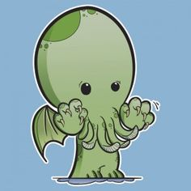
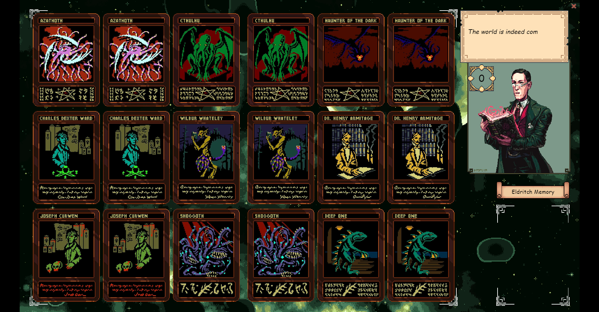
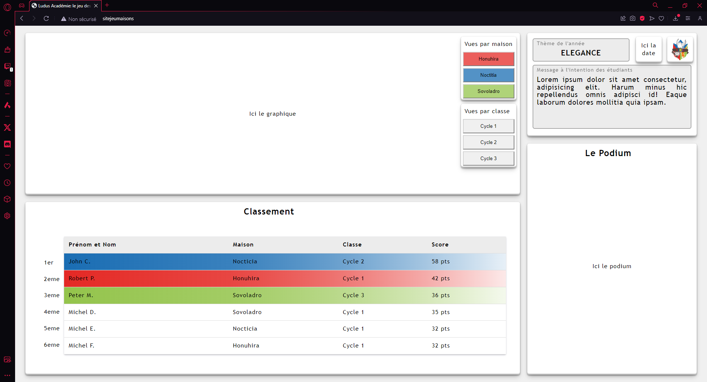
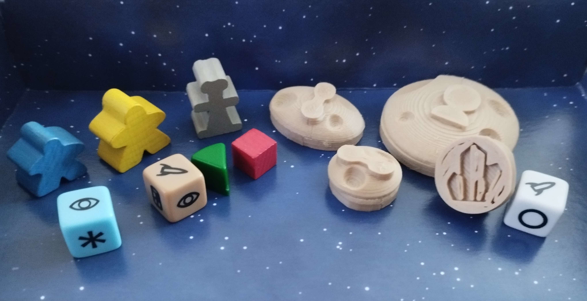
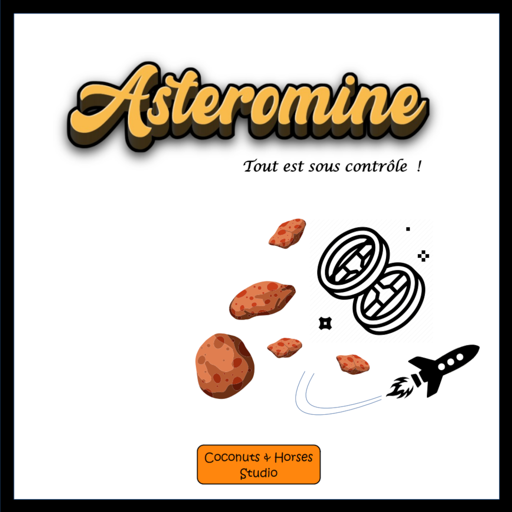

-

Jeune vieux ou vieux jeune étudiant ? Le fait est que me voici redevenu étudiant à 45 ans !
Ayant grandi dans le monde du jeu et surtout du jeu vidéo, y travaillé à toujours été un souhait, un rêve.
Une occasion sérieuse c'est enfin présenté, la possibilité de la saisir aussi, me voilà donc de retour sur les bancs d'école pour mettre à profit toutes mes connaissences et aventures de joueur, une créativité débordante nourrie par des annnées plongées dans des oeuvres de SF et fantaisie mais aussi, voir surtout, toute une expérience acquise par la réalité de monde du travail.
Avec ce portfolio, je tacherai de vous montrer mes créations et mon évolution en temps que game designer et développeur.
Mon CV. -
Développeur et Game Designer
Je me prénomme Fabien Saporito et vous souhaite la bienvenue sur mon portfolio d'étudiant en game design et développement. Sous différent nom, j'apprends, comprends et étends mes connaissances dans la création de jeux pour passer d'acteur à réalisateur.10 Print HELLONessie.0obCoconuts & Horses Studio -

Eldritch Memory
Voici ma première création en tant qu'étudiant en game design et développement.
Le but était de créer un jeu simple à partir de connaissances basiques sur le moteur Construct3 en environ 50 heures.
J'ai choisi de réaliser un jeu casual où le focus est porté sur l'atmosphère plus que sur les mécaniques.
De grands remerciements aux artistes dont j'ai utilisé les assets et tout particulièrement Sid Henderson et Mr Feichtmeir pour l'environement visuel et sonore de ce jeu.
Eldritch memory sur itch.io -

Jeu des Maisons
Premier site web devoleppé en tant que developpeur front end au sein d'une équipe composée des étudiants de notre école.
Mon rôle a été de designer et coder un site pour administrer un sytème de jeu instauré à la Ludus Académie puis avec un collègue, nous nous sommes chargés de l'intégration des élements du back end.
Composé d'une partie étudiante et d'une partie administrative, il a demandé l'utilisation des languages HMTL, CSS, JScript et Php pour être réalisé.
-
 
Asteromine
Projet de jeu de société issue d'un exercice de game design: devolepper un jeu de société depuis son concept jusuqu'à la réalisation d'un prototype.
En duo avec mon fils, nous avons travaillé à faire évouluer son idée originale de faction de créatures mythique minant des astéroïdes en un jeu de mémoire coopératif.
Devant les retours encourageants des premiers playtest, il a été décidé de continuer l'aventure et les playtests pour découvrir le parcour jusqu'à une potentiel publication
La présentation rendue en fin d'exercice. -
En construction.